Nikkie Jan Casuga
I combine cutting-edge technology with considered design — working across software, hardware, and networking to unite technical thinking with artistic expression. Currently teaching the next generation of builders how to code.
A little about my process
In the digital realm, I combine cutting-edge technology with stunning design, blending creativity with craft. With a passion for software, hardware, and networking, I rapidly adapt to new technologies.
My aim is to harmoniously unite technical thinking with artistic expression — whether that's a piece of graphic design, a working prototype, or a lesson plan that turns a young learner into a builder.
Where I've been building
Teaching, mentoring, and shipping small projects with the people I teach.
I currently teach coding to young learners, introducing them to programming logic, robotics, and app development through hands-on, age-appropriate tools. My goal is to make computational thinking fun and approachable — turning abstract concepts into projects kids can build, run, and be proud of.
Scratch Jr.
Learn stories, animations, and basic logic.
mBlock5
Block-based coding for robotics and AI projects.
MIT App Inventor
Build mobile apps with blocks — no code needed.
Raspberry Pi
Explore computing, Python, and real-world projects.
Arduino
Electronics and programming for makers.


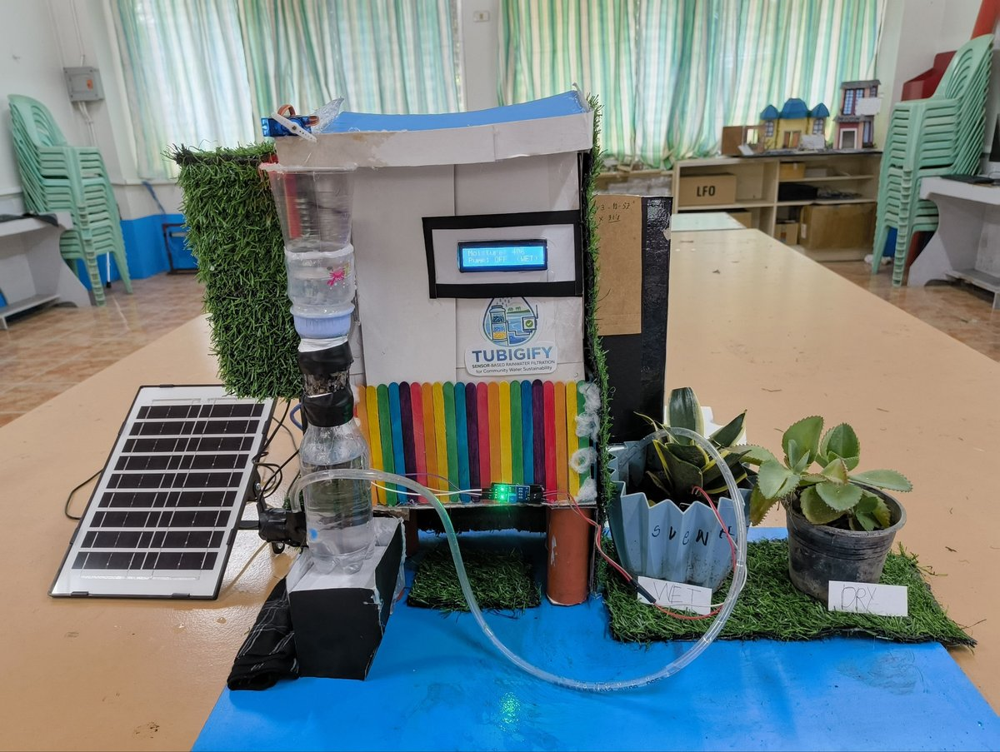
HardwareTubigify
Sensor-Based Rainwater Filtration System with Real-Time Water Quality Monitoring and Automated Plant Irrigation.
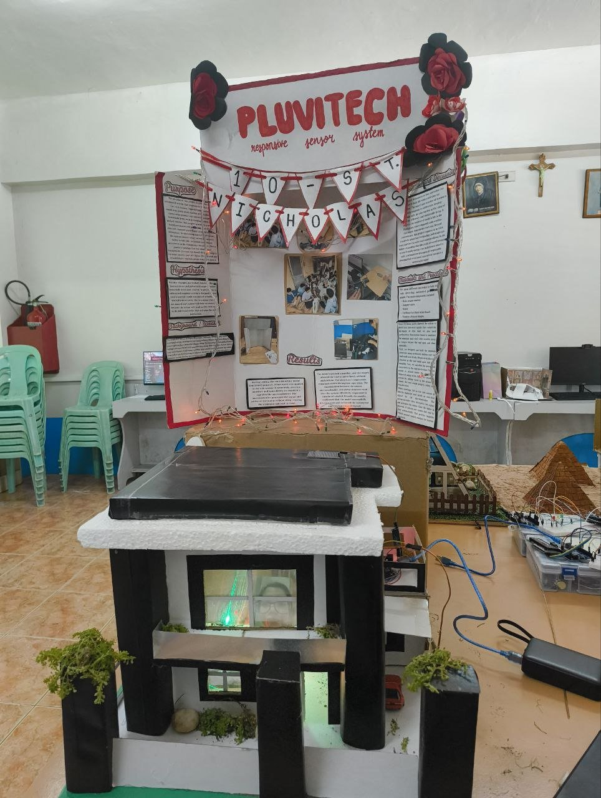
HardwarePluvitech
Automated Rainfall-Responsive Clothesline Protection System Using Sensors.
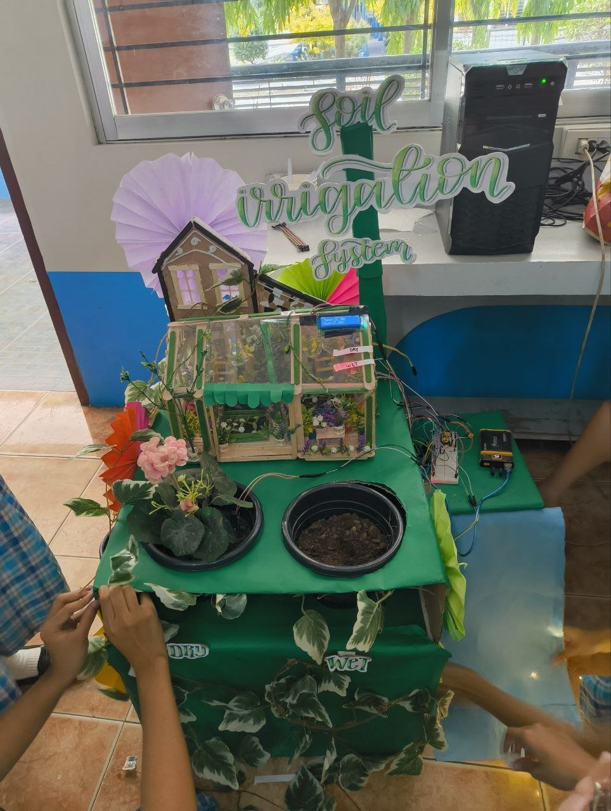
HardwareSoil Irrigation System
Automated watering model that reads soil moisture and irrigates dry and wet zones on cue.
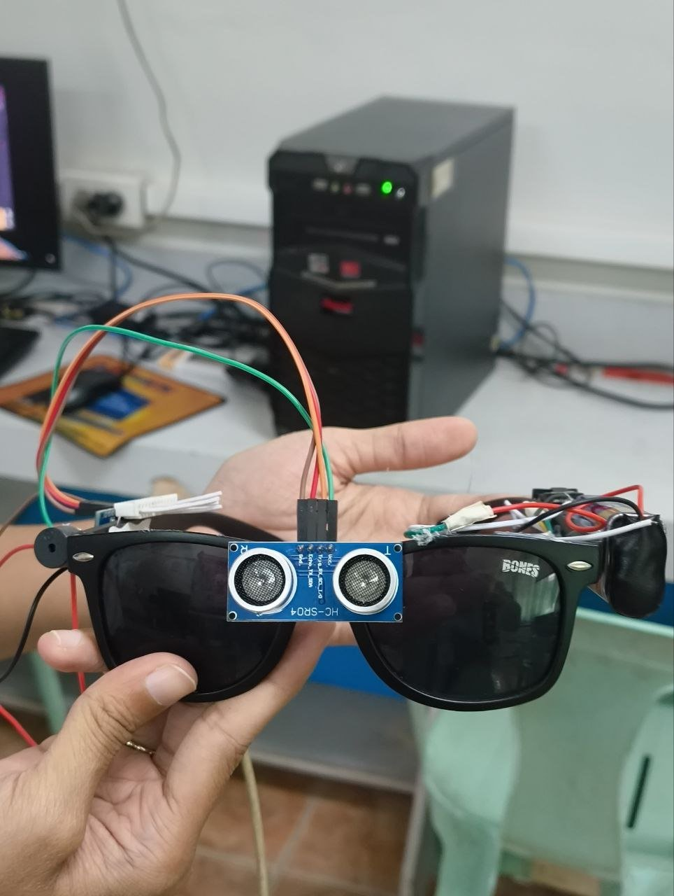
HardwareSmart Glasses
Wearable prototype using ultrasonic sensors to detect nearby obstacles for the wearer.
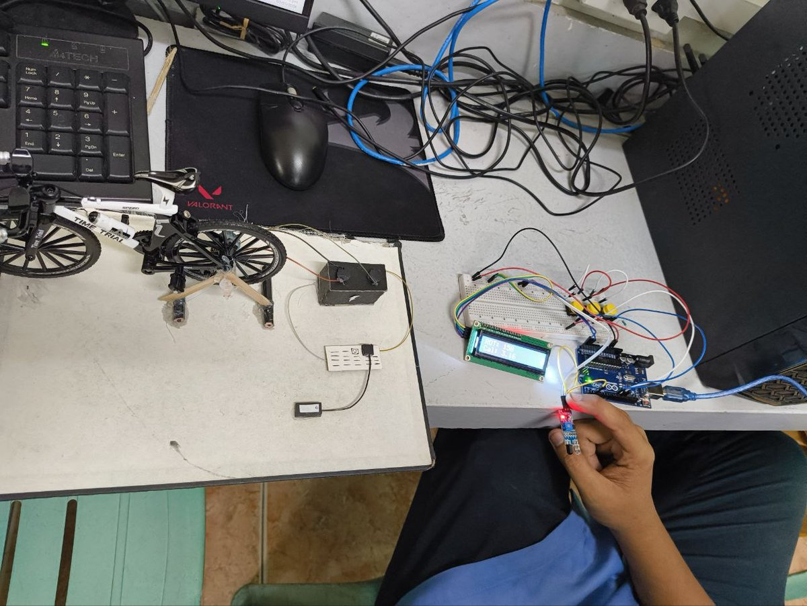
HardwareBike Speed Sensor
Arduino-based sensor rig that reads and displays cycling speed on a live LCD readout.
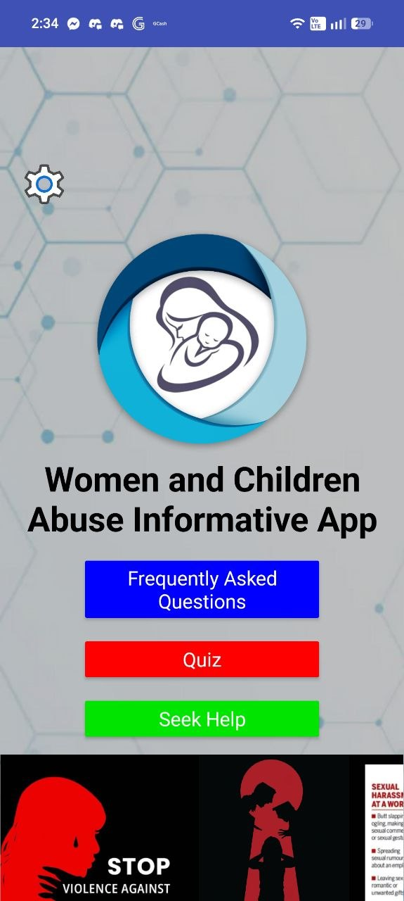
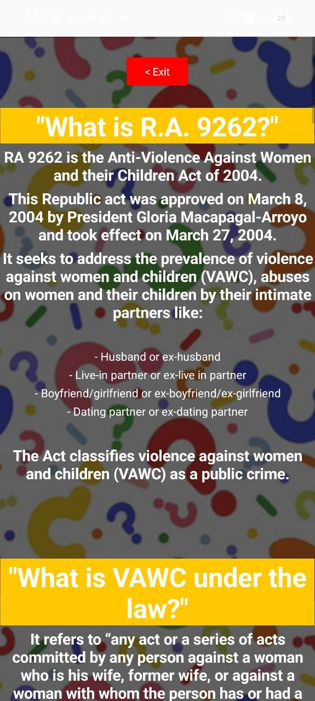
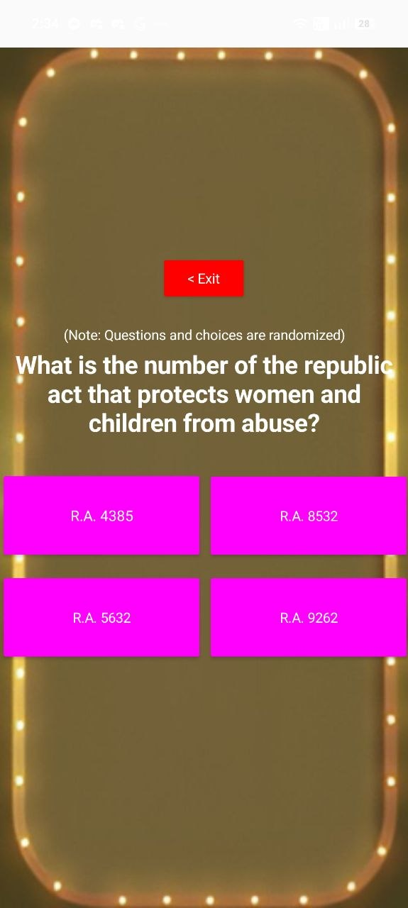
Women & Children Abuse Informative App
A mobile app built with a student team to raise awareness around RA 9262. It walks users through plain-language FAQs, tests understanding with an interactive quiz, and connects them directly to local support — DSWD and PNP — through a Seek Help directory.
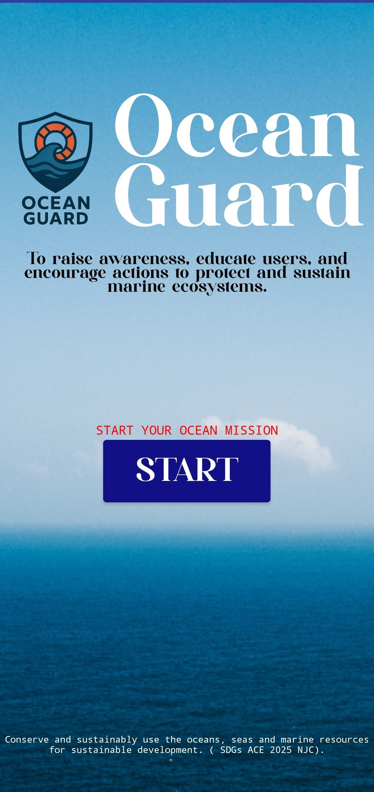
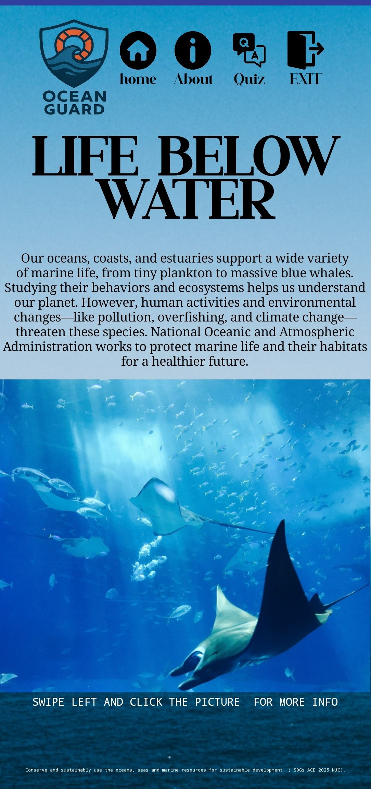
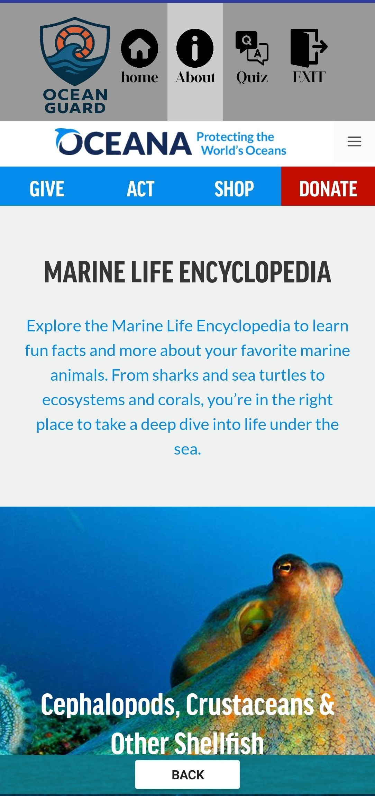
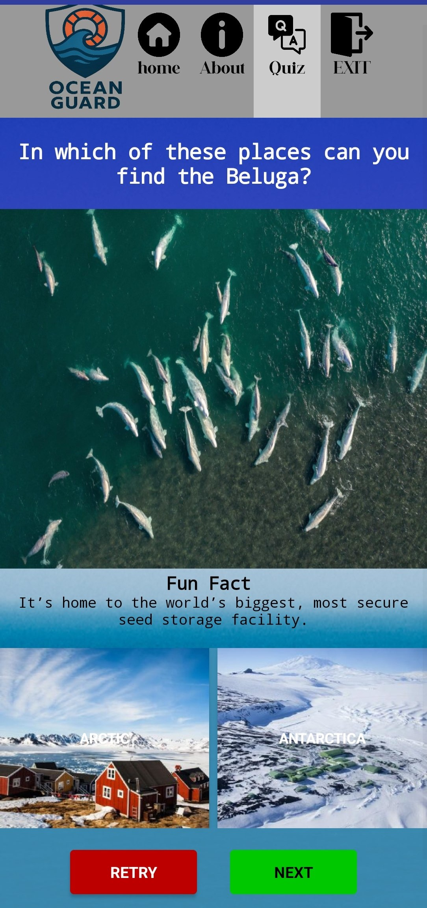
OCEAN Guard: Life Below Water
A mobile app designed to educate users about ocean life and the importance of protecting our underwater ecosystems. The app features a quiz that helps users test their knowledge and learn interesting facts about marine life. It also includes a search feature where users can discover more information about deep-sea creatures, habitats, and life below the ocean surface. The app aims to make learning about the ocean fun, simple, and engaging while encouraging users to become Ocean Guardians.
Coding Platform
Coding is the digital foundation that connects human thought with machine action. It allows you to transform abstract concepts into functional software, interactive games, and automated tools.
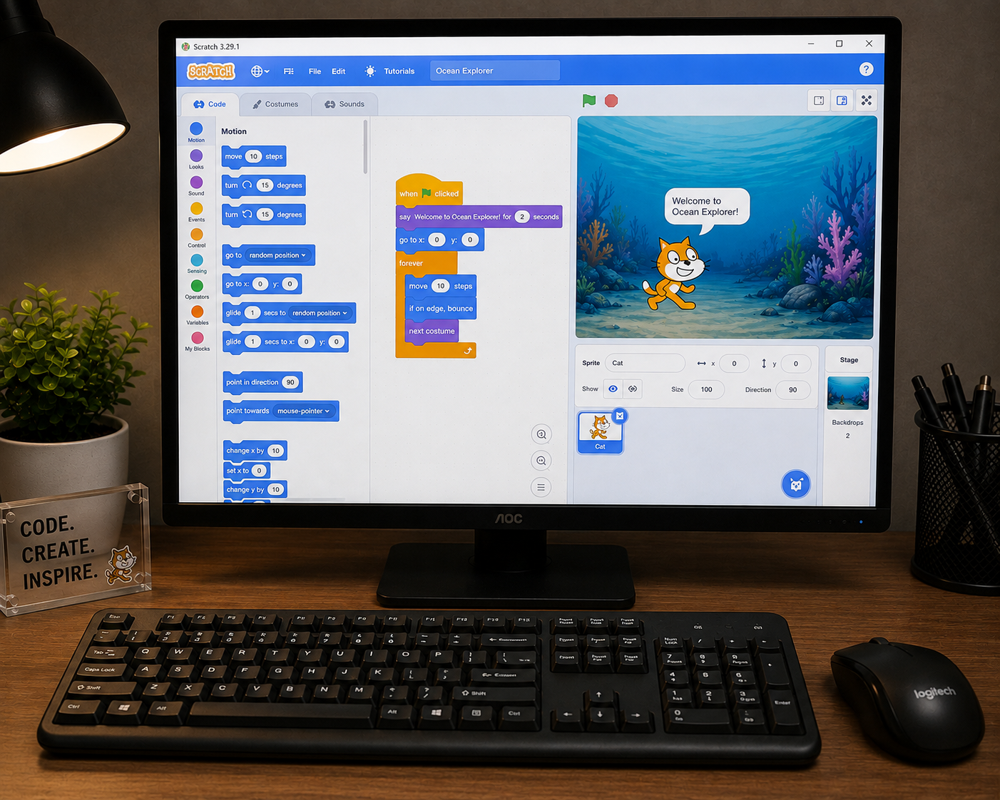
Scratch
is the world’s largest creative learning community for kids, where young people bring their stories, games, and animations to life and share them with peers around the world in a safe, moderated online community.
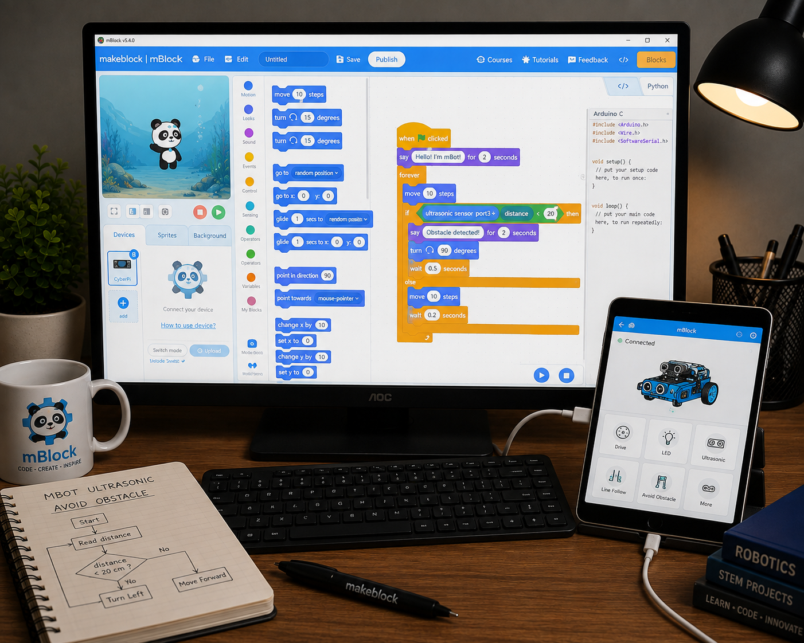
mBlock 5
is a block-based coding platform used to teach programming, robotics, and creative technology. Students can create interactive projects, control robots, and work with devices such as mBot using simple drag-and-drop programming blocks.

MIT App Inventor
is a beginner-friendly platform for creating mobile apps using drag-and-drop blocks. Students can design app interfaces, program interactions, and build useful Android apps without needing complex coding.
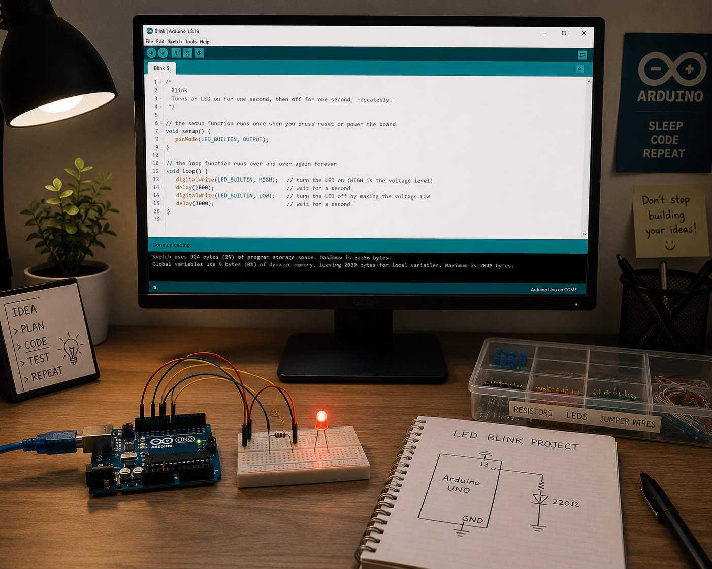
Arduino Uno
is a beginner-friendly microcontroller platform used to create interactive electronics projects. Students can learn programming while controlling LEDs, sensors, motors, and other electronic components.
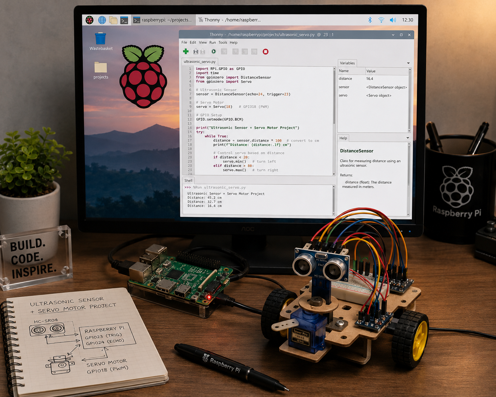
Raspi
is a compact computer that helps students learn programming, electronics, and robotics through hands-on projects. It can connect with sensors, motors, cameras, and other hardware to build interactive systems..
Let's create together
Open to collaborations in design, development, and tech education.